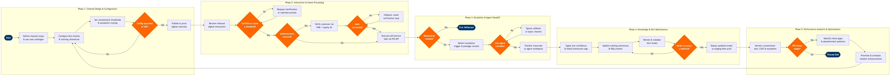

| Step | L4 Step Name | KPI / Target | Pain Point / Risk | Gate |
|---|---|---|---|---|
| 1.1 | Define digital channel scope & use-case catalogue | Use-case coverage ≥70% of top contact drivers | Airlines frequently undercount automatable intents by excluding irregular operations (IRROP) scenarios, leaving high-volume disruption contacts undeflected | |
| 1.2 | Configure NLU intents, entities & training utterances | Intent recognition accuracy ≥88% in offline evaluation | Airline-specific entities (IATA airport codes, fare basis codes, PNR formats) require custom entity extractors not available in generic NLU libraries; training data is sparse for low-frequency intents | |
| 1.3 | Set containment thresholds & escalation routing rules | Mis-escalation rate <5% (contacts escalated that chatbot could have resolved) | Overly aggressive confidence thresholds during IRROP events flood live agent queues; Genesys routing rules require manual override during declared irregular operations | |
| 1.4 | UAT regression test chatbot flows & approve release | UAT pass rate ≥95% across all intent test cases before prod deployment | Regression testing is manual and time-consuming; no automated test harness exists for end-to-end chatbot + PSS API integration paths, increasing release cycle to 3–4 weeks | ⚠ |
| 2.1 | Receive & parse inbound digital interaction | Channel availability ≥99.9% uptime; median response latency <800 ms | WhatsApp Business API throughput is capped by Meta rate limits during high-demand periods (e.g., weather events); fallback to web chat is not seamlessly communicated to passengers | |
| 2.2 | Classify intent & extract booking / loyalty entities | Live intent accuracy ≥85%; confidence score logged for every interaction | Code-switching (multilingual passengers mixing English with Spanish or Portuguese) degrades CCAI intent accuracy by 10–15%; no per-language model version management currently in place | ⚠ |
| 2.3 | Authenticate customer for transactional self-service | Authentication success rate ≥92% on first attempt; failed auth rate <3% | Passengers frequently misquote 6-character PNR (alpha-numeric confusion); Altéa PSS timeout during peak load causes auth failures that appear as customer errors, inflating escalation rate | ⚠ |
| 2.4 | Execute self-service task via PSS & loyalty APIs | Self-service transaction completion rate ≥80% for eligible intents; API error rate <1% | Altéa PSS fare recalculation during voluntary rebooking via API does not always honour same-day change waiver rules, causing incorrect fare difference charges that require manual agent correction | |
| 3.1 | Detect escalation trigger & package conversation context | Context transfer completeness ≥98% (no dropped transcripts); escalation routing latency <5 s | During IRROP events, simultaneous escalation spikes overwhelm Genesys routing capacity; lack of dynamic queue prioritisation means high-value (elite tier) passengers wait alongside general queue | ⚠ |
| 3.2 | Route escalation to live agent by skill & priority | Average speed to answer (ASA) for escalated contacts <90 s; first-contact resolution ≥75% | Skills-based routing matrix requires manual update when agents are cross-trained; stale routing tables during shift changes cause mis-routing and repeat transfers | ⚠ |
| 3.3 | Agent reviews transcript & resumes resolution | Agent handle time for escalated digital contacts <8 min; re-open rate <5% | Agents frequently restart from scratch when CCAI transcript is truncated or context payload exceeds Salesforce Service Cloud screen-pop character limit, negating chatbot deflection savings | |
| 4.1 | Ingest low-confidence & failed interaction logs | Log ingestion SLA <24 h post-interaction; coverage 100% of chatbot sessions | CCAI logs are stored in raw JSON requiring ETL transformation before analysis; no real-time intent failure alerting exists, meaning new failure patterns go undetected for 24–48 h | |
| 4.2 | Update training utterances & FAQ knowledge content | Knowledge article freshness: 100% reviewed within 30 days of policy change; new utterances ≥20 per reclassified intent | No automated trigger connects policy change management (e.g., baggage fee updates, new fare rules) to knowledge base update workflow; stale FAQ content causes chatbot to quote superseded policies | |
| 4.3 | Retrain, validate & promote NLU model to production | New model accuracy ≥baseline +2%; no regression on existing intents; staging validation pass rate 100% | CCAI model versioning is not integrated with airline CI/CD pipeline; manual promotion steps increase risk of deploying untested models to production, with no instant rollback capability | ⚠ |
| 5.1 | Monitor containment rate, CSAT & escalation KPIs | Chatbot containment rate ≥65%; digital CSAT ≥4.0/5.0; escalation rate <35% | Containment rate calculation methodology varies between Genesys and CCAI reporting, creating discrepancies of 5–8 percentage points that obscure true self-service performance | ⚠ |
| 5.2 | Identify intent gaps & journey abandonment patterns | Journey abandonment rate <15% per intent flow; report produced within 5 business days of KPI breach | Session-level journey analytics require joining Genesys session IDs with CCAI interaction IDs and Salesforce case IDs — three separate identity namespaces with no unified customer journey ID | |
| 5.3 | Prioritise & schedule chatbot enhancement backlog | Backlog groomed and sprint-planned within 10 business days of KPI breach; enhancement cycle ≤6 weeks end-to-end | Enhancement prioritisation is often driven by loudest stakeholder rather than quantified passenger impact; lack of a shared ROI model (cost-per-contact avoided) means high-value deflection improvements are deprioritised |